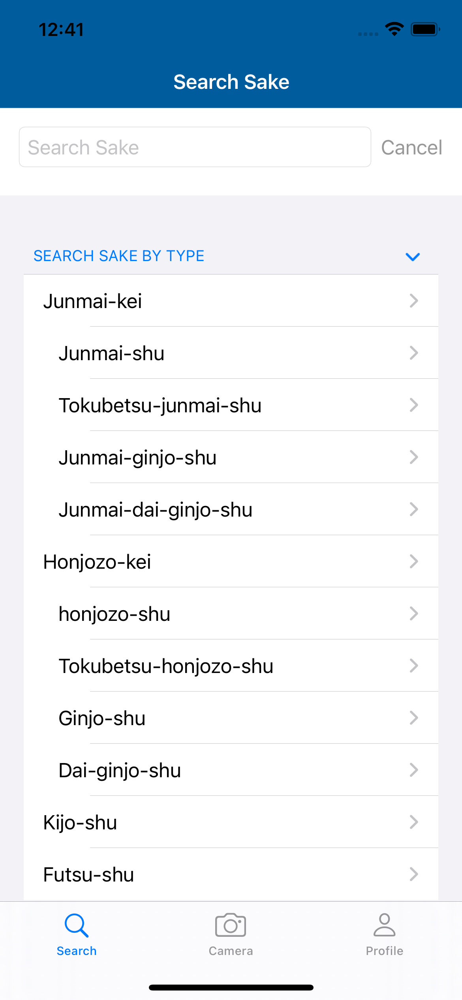

Sakentry
This project is an active personal project of mine and its first version is planned to be released on App Store by March/April, 2021.
Sakentry is an iOS app that allows users to find, learn and review Sake, Japanese alcoholic beverage, just like we use Vivino for wine. Its features include to find sakes in the database through free word search and filtering, upload reviews and take notes on sakes with pictures, and communicate with other users by liking and commenting on their reviews.
Programming languages and tools used in this project include: Swift, Python, Typescript, Xcode, Firebase, Algolia